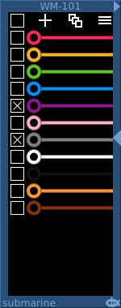
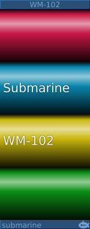

The wire manager offers the ability to choose more colors for the patch cables that you use in your patches. It also has highlighting options which some users may find useful in tracing wires around the patch.
The colors page of the wire manager offers a list of different colored wires. To the left of each wire is a checkbox. When you make a new connection in VCVRack, a color for that wire is chosen from the list of wires that are checked. The list is cycled, so if you select only Red, Yellow and Green wires in the wire manager, the first wire you add to your patch will be Red, the next Yellow, the third Green and then back to Red.
If you wish to connect all of the right channel of a stereo signal in Red, you might choose to select only the Red wire in the wire manager, and then to wire up the entire right channel signal chain. Then change to a Dark Grey wire to wire the left hand signal chain.
Or perhaps you just want all of the wires to be pink to celebrate Valentine's Day.
The top-most checkbox in the list allows you to select / deselect all the colors.
For the first 25 colors in the list, you can use Shift-Fxx to quickly select or deselect the checkbox on the color. You need to be hovering over the WM-101 device in the rack. Use Shift-F1 for the first color, Shift-F2 for the second and so on.
At the top of the list to the left of centre is a plus icon. This will take you to the editing page to create a new wire color which will be placed an the bottom of the list when you save it.
To the right of center at the top is the collections icon. This takes you to the collections page where you can rename, delete or use collections. A collection is a quick way of switching between color sets. To create a collection, choose some colors on the colors page, and then choose to 'Save Collection' using the main menu.
For the first 25 collections in the list, you can use Ctrl-Fxx or Cmd-Fxx to switch to that collection. Use Ctrl/Cmd-F1 for the first collection, Ctrl/Cmd-F2 for the second collection etc.
To the right at the top is a menu icon. This menu gives direct access to some quick settings, or to the full settings page using the Settings option.
If you right-click on a color, the menu allows you to move your colored wires up or down the list, edit the color of the wire, or delete the color.
On the editing page there are save and cancel buttons.
There are three sliders here to adjust the color of the wire. Although they are not deliberately not labelled, the sliders control the Red, Green and Blue parts of the color. Each slider has a gradient background accurately showing the colors that will result from moving that slider.
The settings page currently has the following functions.
When the variation option is enabled, the color chosen for your wire is randomly varied. You might wish to use all green wires for a patch, but if this option is enabled, you can have lots of slightly different green wires, emulating a collection of patch cables acquired over a long and happy period of modular experimentation.
The three sliders allow you to fine tune the type of variation introduced.
H: is the hue or actual color of the wire
L: is the lightness of the wire, from a deep dark red, to a light pale pink for example
S: is the saturation of the wire, how deep the color is. Wires with a low saturation will appear more gray.
When the highlighting option is selected, an additional transparency is added to the wires in the patch. When you hover over a module in the patch, only those wires connected to that module will be shown with normal opacity. This may help you to trace pathways in complex patches. You can quickly point to a module and see where each wire goes.
There are two highlighting options, they differ in what happens when you are not pointing at a module, when you are pointing at empty space in the rack. Always On will still fade all the wires when you are not hovering over any module; When Hovering will only fade wires away when you are pointing at something.
When this option is selected, the wire manager will not apply new colors to deleted wires when the deletion is undone. By default the wire manager will continue to color all new wires, including those which are undone deletions.
When this option is selected (default), the billboard will be displayed with a rounded effect on the wires.
The Minimize control at the center right hand side of the module will shrink the size of the module down to 1-HP. All the modules in the patch to the right of the module browser will be move to the left to take up the space.
When the module is minimized, a Restore button is visible in the centre of the module. Selecting this will restore the module to its previous size. All modules to the right of the module browser will be moved to the right to make space.
In this way you can keep the WM-101 Wire Manager in your patch for ready access, without taking up more space than is necessary.
The billboard control at the top right of the module will switch to a billboard display, suitable for use as a key when recording videos. By default the billboard displays wires with a rounded effect but you can have flat colors by adjusting the "3D billboard?" setting.
You can switch back to the standard view by clicking on the arrow at the top left of the module.
Once the wires have been connected in your patch, you do not need to keep the wire manager around. You can minimize it to save space, but if you remove it from the patch completely, the wires will still retain their colors. Highlighting will not function without the wire manager in the patch.
The settings that you make are global. They are not saved along with the patch, so your favorite collection of colored wires is available in every patch that you add wire manager to.
Do not add more than one wire manager to your patch. It will do no harm, but only one of them will be actually selecting the colors and the other will be wasting CPU.
The WM-102 is a stand alone billboard. It can load wire manager collections and display them as a billboard. Suitable for incorporating into patches for sharing, or for use in videos
If you do not load a collection into the billboard, it will automatically track the colors of any active WM-101 Wire Manager. You can use the "Lock Colors" option to stop tracking.
If you intend to distribute a patch containing a WM-102, you should lock the colors before you distribute the patch. Otherwise, the patch will continue to track the colors in the WM-101 which will not be the same as your own color selections once the patch is loaded by another user.